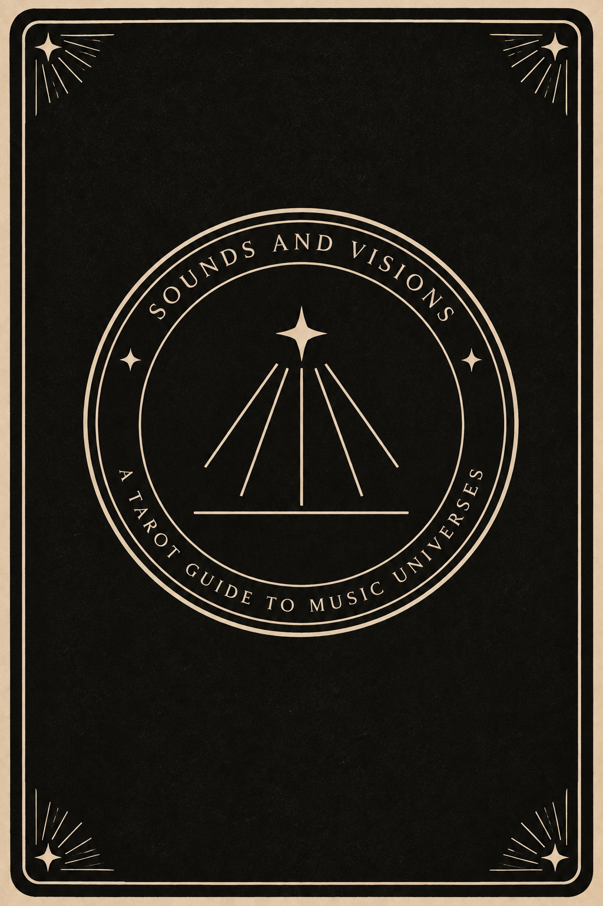

A Tarot Guide to Music Universes

About
A love story suspended between hope and inevitable tragedy.
Why this scene?
The staircase becomes a metaphor for distance, desire and fate.
🎬 Watch the scene
🎵 Listen on Spotify
Sounds and Visions transforms iconic musical films into a tarot deck of hand-printed woodcuts.
Woodcut on MDF
Printed by hand on Hahnemühle 300 gsm paper using oil-based relief ink.
Edition
30 impressions + AP
Each print is hand-pulled from the original carved block, signed and numbered by the artist.
Kateryna Benke
Analog printmaker
kate.benke@gmail.com